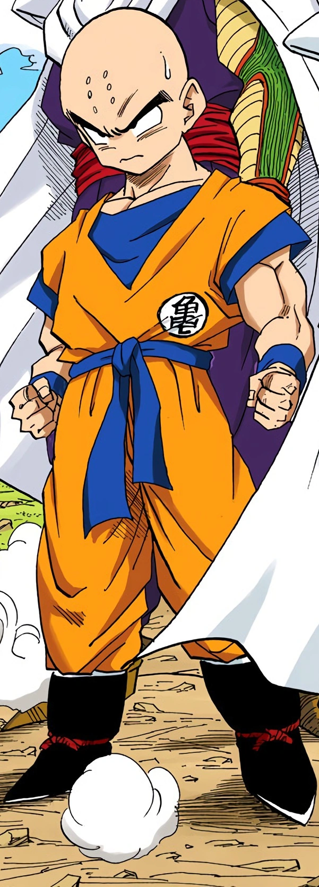

He's one of the most powerful and talented martial artists on Earth.
He is courageous, faithful, and good-natured.
Krillin had a brief rivalry with Goku when they first trained under Master Roshi, but they quickly became lifelong best friends, to the point that Goku cares for him as much as his family and closest ones.
He is a prominent Z Fighter, despite usually being overpowered by the major enemies.
His short stature and baldness (with the exception of when he grows out his hair in the Buu Saga onwards, although he occasionally shaves his head in several sagas in Dragon Ball Super) aid him in his ability to provide comic relief during tense moments.
During the latter half of Dragon Ball Z, he largely retires from fighting, opting to settle down with his family instead, becoming the husband of Android 18 and the father of Marron.
However, because of all things that occur during the Golden Frieza Saga, he returns to his lifestyle as a warrior later on in Dragon Ball Super.
Originally a jealous and selfish person, Krillin did not respect rules when confronted with Roshi's training.
After a short arch-rivalry between the two (years later, Krillin even admits that he hated Goku at first), he becomes Goku's best friend, and his selfish and jealous personality becomes more kind-hearted and generous (although he still has slight selfish and jealous traits after his reform).
Krillin is often used as comic relief or cannon fodder by the author.
As the most prominent full-blooded human character in the Dragon Ball series, Krillin also represents a sense of normalcy to Goku and Gohan, as well as often being the most identifiable.
Often when things in the Dragon World turn bizarre, it is left to Krillin to shake his head in disbelief and crack a joke.
Despite his reputation as being a weakling compared to his Saiyan comrades, he is considered to be one of the stronger pure-blooded humans in the Dragon Ball series, being thousands of times stronger than the average person, in fact he is well into the superhuman league (although this is largely due to the fact that he was afforded much greater opportunities to increase his strength, such as gaining the ability to use ki, training under the Guardian of the Earth, and having his potential unlocked by Grand Elder Guru, things that no other human, such as Mr. Satan, ever had).
Although he is not as strong as Goku or Gohan, his determination in helping his friends is a key asset.
Furthermore, Krillin's ingenuity and talent for ki-manipulation is far superior to that of most warriors, even those stronger than himself, and he has an ability to sense hidden powers.
Krillin had his dormant ki awakened by the Namek Elder, Guru, during the events of the Namek Saga (although it is possible that not all of his power was freed, due to the fact that Gohan still had more hidden power and that they both grew to be much stronger), and this helped keep him among the same level as his more naturally powerful friends, at least for a little while.
Krillin has trained hard most of his life, becoming extremely powerful and proving it in combat with many foes.
Unfortunately, he is quickly outclassed by many of the other characters in the series, such as Piccolo and the Saiyans; though among all the full-blooded humans he faces in combat he is one of the strongest.
On one occasion, during the course of the 25th World Martial Arts Tournament, Yamcha says to Krillin's daughter that Krillin is "the strongest human being in the world."
Some fans feel that the mangaka, Akira Toriyama, uses Yamcha to state a fact on this scene, as he also says that Krillin is the "strongest Earthling male" in an interview.[21] As it is spoken in the context of Krillin being married to 18, it implies that Krillin is the strongest Earthling at least by that point in the series (this claim gets support in the video game Dragon Ball Z: Supersonic Warriors in which the final part of Krillin's story, which focus on the Majin Buu Saga, is titled as "The Strongest Earthling").
Many fans immediately will connect Krillin with his signature move, Destructo Disc, a spinning razor-sharp disk of energy that has the power to cut through just about anything.
Despite its immense power, it is extremely unwieldy and hard to control.